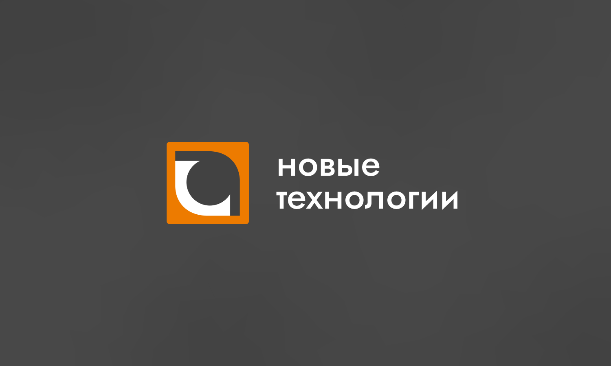
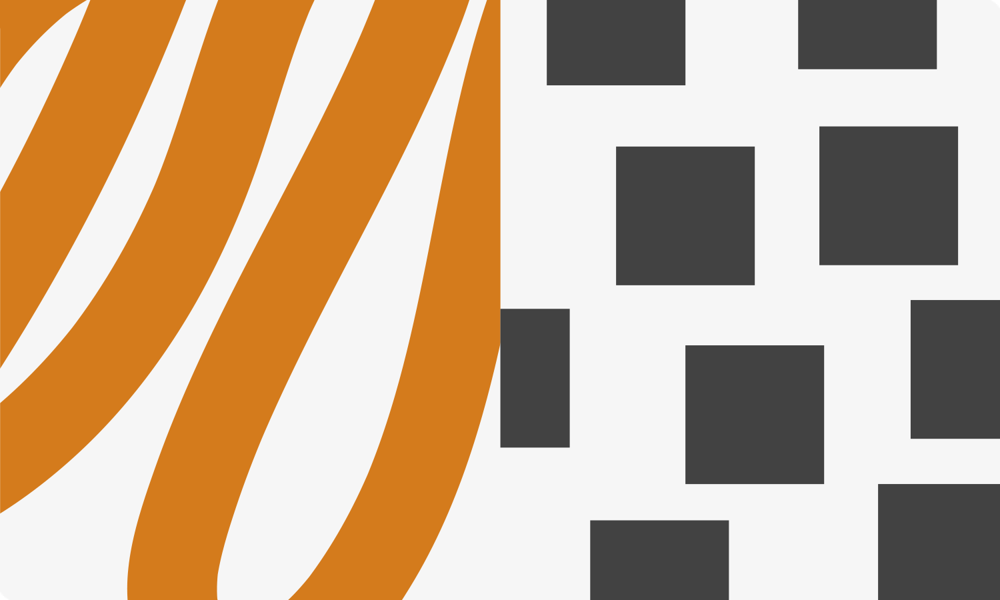
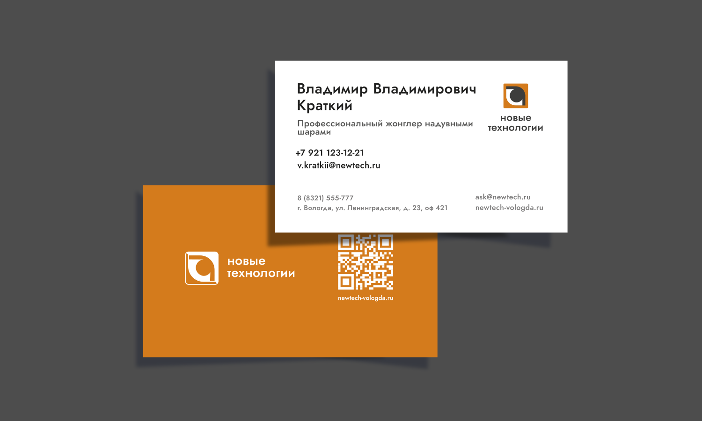
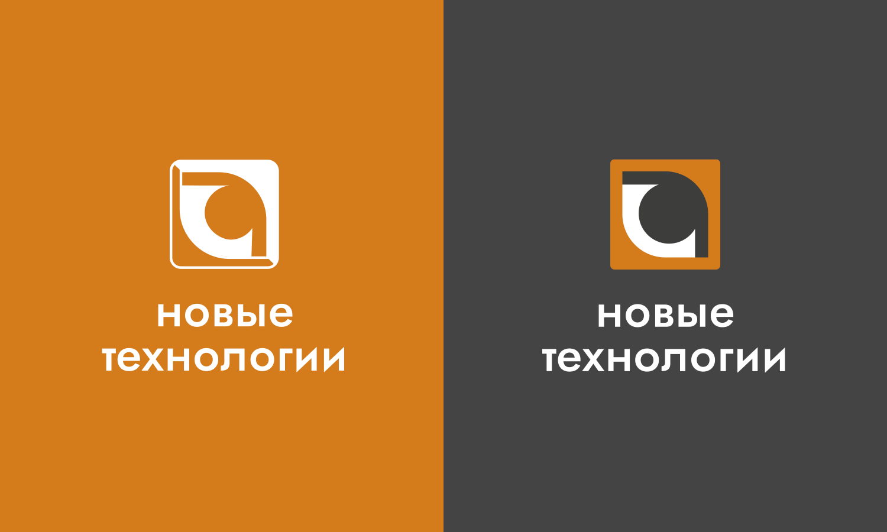

Новые технологии — компания в сфере видеонаблюдения, интернета и телевидения. Бренду важно выделяться среди конкурентов и транслировать современный технологичный характер.
Задачей стало оздать визуальную систему, которая привлекает внимание и вызывает доверие, не повторяя типичный язык телеком-компаний.
Я выстроил систему на рыжем и графитовом: рыжий отвечает за заметность, графитовый — за строгость и баланс. Основным шрифтом выбрал Jost — современный и хорошо читаемый гротеск.
В качестве основного шрифта выбрал гротеск Jost — он поддерживает современный характер бренда, хорошо читается и сохраняет чистоту коммуникации.
Адаптировал логотип под разные носители в цветной и монохромной версиях. Визитку сделал гибким шаблоном, который заказчик может самостоятельно обновлять.
Вместо сложной технологичной графики сделал ставку на цвет, контраст, типографику и чистую композицию — это помогает выделиться, сохраняя профессиональный образ.
Получилась цельная и масштабируемая система, которую легко адаптировать под разные носители и поддерживать без постоянного участия дизайнера.



{kind=link}
{kind=link}
{kind=link}
{kind=link}